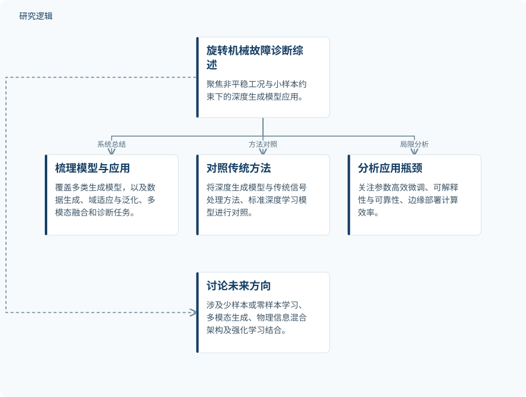

摘要解读
基于深度生成模型的旋转机械故障诊断技术综述
A Review of Fault Diagnosis Technology for Rotating Machinery Based on Deep Generative Models
解读更新 2026-11-17 21:45 · 依据公开摘要整理，未核验全文细节
工况不断变化、故障样本又少，旋转机械诊断如何获得可靠的数据支持？这篇综述梳理深度生成模型的相关应用，阅读价值在于理解它们能承担哪些任务，以及走向实际运维仍面临哪些限制。
文章目录
变工况与小样本，构成叠加挑战
旋转机械故障诊断经常同时面对非平稳工况和小样本约束。摘要指出，传统深度学习模型应对这些问题时，表现往往不够理想。本文关注的不是单一模型的性能突破，而是生成式方法如何回应这类数据限制。
深度生成模型的作用也不限于扩充数据。摘要将其能力概括为合成高保真样本、重构系统潜在状态，以及对复杂多模态数据流建模，由此引出它们在故障诊断中的不同用途。
按模型类型与诊断任务组织综述
这是一篇综述，而非摘要中报告了新模型实验的研究。作者系统梳理深度自回归模型、变分自编码器、生成对抗网络、扩散模型和大语言模型及其变体在旋转机械故障诊断中的应用。
应用范围包括数据生成、域适应与泛化、多模态数据融合，以及下游故障诊断和异常检测。作者还将深度生成模型与传统信号处理方法、标准深度学习模型进行对照；摘要未交代文献检索、筛选和证据评价的具体流程。
依据摘要整理的综述内容示意


概括摘要明确列出的梳理与分析关系，不代表实验流程、性能比较结果或论文原图。
下载 SVG图示关系说明
实线表示相邻阶段的信息流，虚线表示跨阶段联系或反馈。
旋转机械故障诊断综述 → 梳理模型与应用：系统总结；旋转机械故障诊断综述 → 对照传统方法：方法对照；旋转机械故障诊断综述 → 分析应用瓶颈：局限分析；旋转机械故障诊断综述 → 讨论未来方向：方向展望
应用潜力之外，部署瓶颈同样突出
摘要及研究亮点将深度生成模型概括为应对数据限制的重要工具，重点应用集中于数据增强、域适应和多模态融合。不过，这属于综述层面的归纳，摘要没有给出统一的性能增益，也未据此确立不同模型之间的优劣排序。
作者同时强调，可解释性与可靠性、调优复杂度，以及边缘部署的计算效率仍是关键瓶颈。参数高效微调也是其讨论重点。因此，不能仅凭生成样本的能力，就推断模型已经满足实际诊断与部署要求。
摘要不足以判断优势的适用边界
仅凭当前摘要，无法判断综述覆盖了多少文献、哪些设备与数据集，也无法核对样本规模、故障类别、工况变化范围，以及比较方法和评价指标。这些是当前资料的信息边界，不代表论文没有相关讨论。
摘要也不足以确认相关方法经过何种跨设备、跨工况或现场验证。少样本或零样本学习、稳健多模态生成、物理信息混合架构及强化学习结合，被列为未来方向，不能当作本文已经验证的诊断效果。
阅读启发：先辨任务，再看可靠性证据
阅读启发：面向智能运维，可先区分生成模型究竟用于补充训练数据、支持域适应，还是融合多模态信息，再进一步阅读相应应用的验证依据。对于大语言模型，也宜关注其具体承担什么任务，而不把进入综述范围等同于已证明有效。
建议进一步关注作者如何讨论可解释性、参数高效微调与边缘计算效率，以及这些约束如何影响应用选择。这样的阅读重点，比仅比较模型名称更贴近摘要提出的实际问题。
以上为本站阅读启发与建议，不是论文已验证的结论。